Connect to your cloud server with SSH for this exercise.
Deploy a multi-component web application with nginx
The goal of this exercise is to understand the challenges of deploying a multi-component web application, and how a reverse proxy like nginx can help.
This guide assumes that you are familiar with reverse proxying, that you have nginx installed and
running on a server, and that you have a DNS wildcard entry preconfigured to
make various subdomains (*.jde.archidep.ch in this guide) point to that
server.
On this page
Table of contents
 Legend
Legend
Parts of this exercise are annotated with the following icons:
-
 A task you MUST perform to complete the exercise
A task you MUST perform to complete the exercise
-
 Optional step that you may perform to make sure that
everything is working correctly, or to set up additional tools that are not required but can
help you
Optional step that you may perform to make sure that
everything is working correctly, or to set up additional tools that are not required but can
help you
-
 Advanced tips on how to go further (or
challenges!)
Advanced tips on how to go further (or
challenges!)
 The end of the exercise
The end of the exercise-
 The architecture of the software you ran or
deployed during this exercise
The architecture of the software you ran or
deployed during this exercise
-
 Troubleshooting tips: how to fix common problems you might
encounter
Troubleshooting tips: how to fix common problems you might
encounter
The application
The application you will deploy is Revprod, a marketing web application where customers can leave testimonials about The Revolutionary Product. This application has been developed as two separate components:
-
The revprod landing page: the main page of the application that describes the product and displays customers’ testimonials.
This component is basically a static page with no server-side logic. It loads testimonials from the backend using AJAX requests.
-
The revprod backend: an application that allows customers to provide their testimonials.
This component stores the customers’ testimonials in an embedded file database.
This separation is for the purposes of the exercise, but large applications are often split like this for various reasons.
Some advantages of a multi-component application are:
- Each component can be developed and deployed separately.
- Each component could be developed by a separate team, using their favorite programming language and tools.
- Each team could deploy new versions of their component independently.
The disadvantages are:
- It is more complex to manage the development and deployment of a multi-component application.
- Separate teams working together must agree on the API that the components use to communicate and not break that contract.
- On the deployment side, you have to make sure that you always deploy compatible versions of all components together.
Install Node.js
As described in the READMEs of both application, you need Node.js version 24 installed on your server to run them. Use the following commands to install the correct version of Node.js:
$> sudo apt-get install -y curl
$> curl -fsSL https://deb.nodesource.com/setup_24.x | sudo -E bash -
$> sudo apt-get install -y nodejs
$> node -v
24.x.y
Note
Installation instructions from NodeSource.
Deploy the components separately
In the following steps, we will start by deploying the revprod backend and
frontend separately at these URLs (replacing jde with your name and
archidep.ch with your assigned subdomain, as you configured it during the DNS
exercise):
http://revprod-backend.jde.archidep.chhttp://revprod-landing.jde.archidep.ch
Every time this exercise mentions jde or jde.archidep.ch, be sure to replace
jde with your server’s username and archidep.ch with your assigned subdomain
for the course.
If you are logged in, you can see what you should use under Hostname in your cloud server’s details card.
Deploy the revprod landing page
Clone the landing page repository on your server and install the required dependencies:
$> cd
$> git clone https://github.com/ArchiDep/revprod-landing-page.git
$> cd revprod-landing-page
$> npm ci
Create a systemd unit file named /etc/systemd/system/revprod-landing.service
(e.g. with nano) to execute this component and make it listen on port 4201:
[Unit]
Description=Landing page for The Revolutionary Product
[Service]
ExecStart=/usr/bin/node bin.js
WorkingDirectory=/home/jde/revprod-landing-page
Environment="REVPROD_LISTEN_PORT=4201"
# Public URL at which the backend can be accessed
Environment="REVPROD_BACKEND_BASE_URL=http://revprod-backend.jde.archidep.ch"
User=jde
Restart=on-failure
[Install]
WantedBy=multi-user.target
Replace jde with your name in the WorkingDirectory and User options. Also
replace jde with your name and archidep.ch with your assigned subdomain in
the second Environment option indicating the URL of the backend (the second
component which you have not yet deployed).
Enable and start your new service:
$> sudo systemctl enable revprod-landing
$> sudo systemctl start revprod-landing
You can check that it is running with sudo systemctl status revprod-landing.
Create an nginx site configuration file
/etc/nginx/sites-available/revprod-landing (e.g. with nano) to expose this
component:
server {
listen 80;
server_name revprod-landing.jde.archidep.ch;
root /home/jde/revprod-landing-page/public;
location / {
proxy_pass http://127.0.0.1:4201;
}
}
Replace jde with your name and archidep.ch with your assigned subdomain in
the server_name directive, as well as jde in the root directive.
Enable that configuration with the following command:
$> sudo ln -s /etc/nginx/sites-available/revprod-landing /etc/nginx/sites-enabled/revprod-landing
Check and reload nginx’s configuration:
$> sudo nginx -t
$> sudo nginx -s reload
You should then be able to access the revprod landing page at http://revprod-landing.jde.archidep.ch.
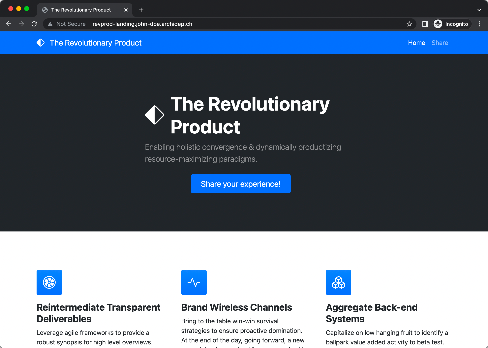
Deploy the revprod backend
Clone the backend repository on your server and install the required dependencies:
$> cd
$> git clone https://github.com/ArchiDep/revprod-backend.git
$> cd revprod-backend
$> npm ci
Create a systemd unit file named /etc/systemd/system/revprod-backend.service
(e.g. with nano) to execute this component and make it listen on port 4200:
[Unit]
Description=Backend for The Revolutionary Product
[Service]
ExecStart=/usr/bin/node bin.js
WorkingDirectory=/home/jde/revprod-backend
Environment="REVPROD_LISTEN_PORT=4200"
# Public URL at which the frontend can be accessed
Environment="REVPROD_LANDING_PAGE_BASE_URL=http://revprod-landing.jde.archidep.ch"
User=jde
Restart=on-failure
[Install]
WantedBy=multi-user.target
Replace jde with your name in the WorkingDirectory and User options. Also
replace jde with your name and archidep.ch with your assigned subdomain in
the second Environment option indicating the URL of the landing page.
Enable and start your new service:
$> sudo systemctl enable revprod-backend
$> sudo systemctl start revprod-backend
You can check that it is running with sudo systemctl status revprod-backend.
Create an nginx site configuration file
/etc/nginx/sites-available/revprod-backend (e.g. with nano) to expose this
component:
server {
listen 80;
server_name revprod-backend.jde.archidep.ch;
root /home/jde/revprod-backend/public;
location / {
proxy_pass http://127.0.0.1:4200;
}
}
Replace jde with your name and archidep.ch with your assigned subdomain in
the server_name directive, as well as jde in the root directive.
Enable that configuration with the following command:
$> sudo ln -s /etc/nginx/sites-available/revprod-backend /etc/nginx/sites-enabled/revprod-backend
Check and reload nginx’s configuration:
$> sudo nginx -t
$> sudo nginx -s reload
You should then be able to access the revprod backend at http://revprod-backend.jde.archidep.ch.
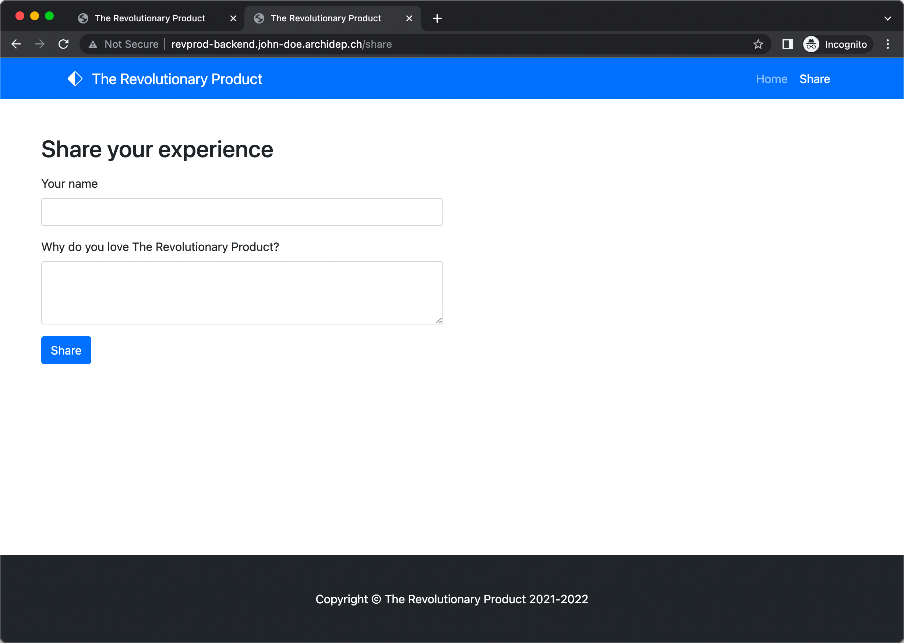
Take the time to share your thoughts about The Revolutionary Product!
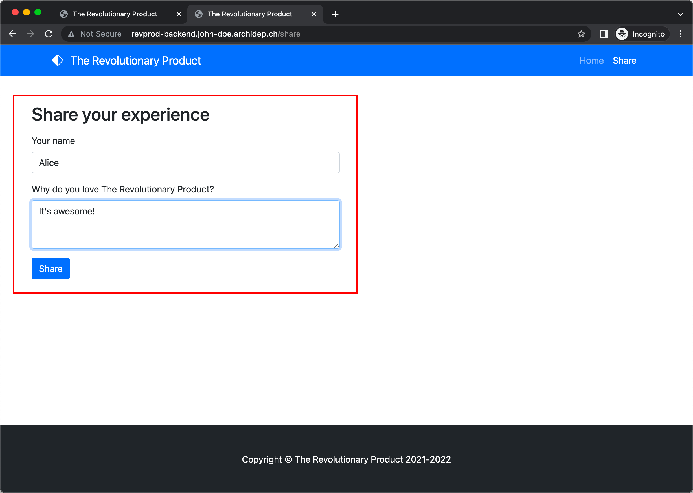
It’s not working!
If you have followed the instructions so far, you should be able to access the revprod backend and landing page in your browser. You should also be able to create testimonials in the backend page.
Note that the URL switches from http://revprod-landing.jde.archidep.ch to
http://revprod-backend.jde.archidep.ch (and back) when you navigate from
the landing page to the Share page. Both components use exactly the same theme
so that the transition is seamless, however by looking at the URL the user
can clearly see that these are two separate sites.
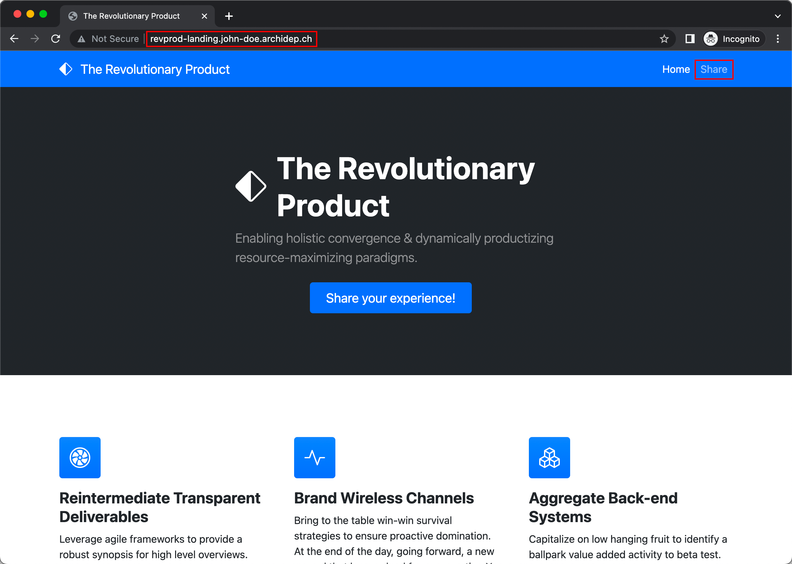
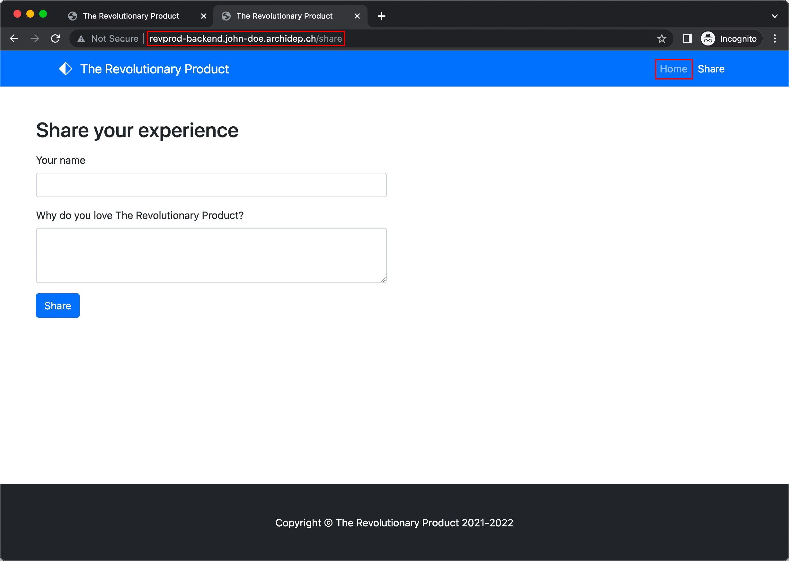
But more importantly, the testimonials are not displayed on the landing page!
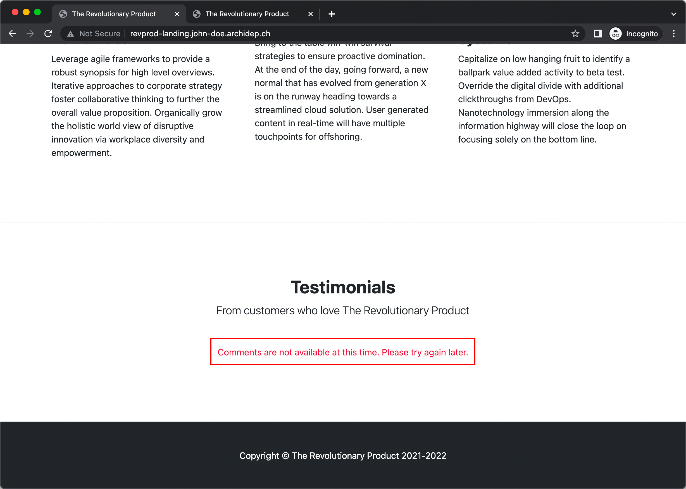
If you open your browser’s developer console, you should see an error that looks something like this:
Cross-Origin Request Blocked: The Same Origin Policy disallows reading the
remote resource at http://revprod-backend.jde.archidep.ch/comments.
(Reason: CORS header ‘Access-Control-Allow-Origin’ missing). Status code: 200.
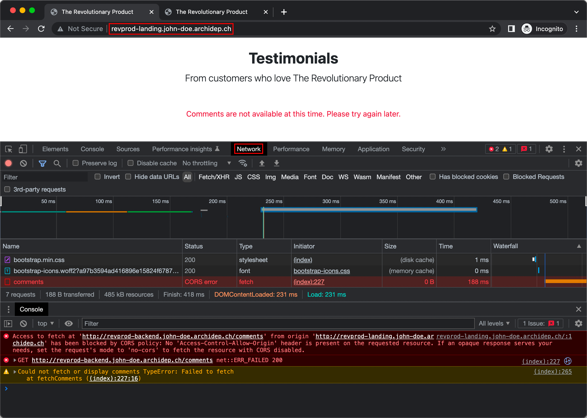
The landing page’s AJAX request to fetch the comments from the backend has been
blocked by the browser because the request is to a different origin: the
landing page is at http://revprod-landing.jde.archidep.ch and is attempting to
access http://revprod-backend.jde.archidep.ch which is another domain
entirely.
This is called the Same-Origin Policy (SOP). It is a critical security mechanism that restricts how a document or script loaded by one origin can interact with a resource from another origin.
The SOP helps isolate potentially malicious documents, reducing possible attack vectors. For example, it prevents a malicious website on the Internet from running JS in a browser to read data from a third-party webmail or e-banking service (which the user is signed into) or a company intranet (which is protected from direct access by the attacker by not having a public IP address) and relaying that data to the attacker.
Using Cross-Origin Request Sharing (CORS)
One way to solve this issue is with Cross-Origin Request Sharing (CORS): the backend can use HTTP response headers to indicate to the frontend that it can perform requests from a different origin.
The revprod backend already supports sending the appropriate CORS headers to
allow cross-origin requests. Update the systemd unit file
/etc/systemd/system/revprod-backend.service for the backend and add the
appropriate environment variables to the [Service]
section to enable CORS:
Environment="REVPROD_CORS=true"
Environment="REVPROD_CORS_ORIGINS=http://revprod-landing.jde.archidep.ch"
Replace jde with your name and archidep.ch with your assigned subdomain in
the definition of the second environment variable.
Reload the systemd configuration and restart the backend service:
$> sudo systemctl daemon-reload
$> sudo systemctl restart revprod-backend
Refresh the revprod landing page at http://revprod-landing.jde.archidep.ch again. The comments should work this time!
If you look at your browser’s developer console when refreshing the page, you should see that the backend now sends the following header in the comments response:
Access-Control-Allow-Origin: http://revprod-landing.jde.archidep.ch
Your browser knows to check this header and let the request through if the origin matches.
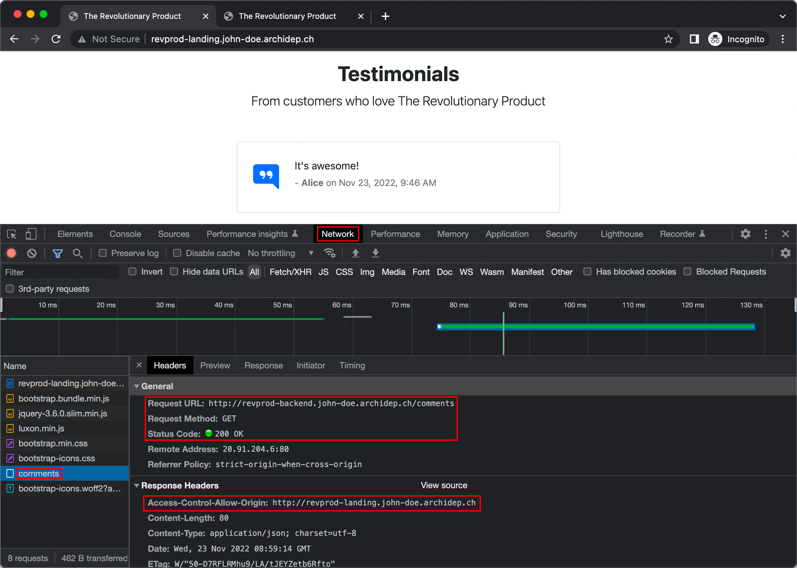
Disabling CORS
You should now disable CORS because we will explore another solution to this problem during the rest of this exercise.
Update the systemd unit file /etc/systemd/system/revprod-backend.service for
the backend and set the value of the REVPROD_CORS variable to false:
Environment="REVPROD_CORS=false"
Reload the systemd configuration and restart the backend service:
$> sudo systemctl daemon-reload
$> sudo systemctl restart revprod-backend
Check that the comments no longer work by refreshing http://revprod-landing.jde.archidep.ch.
You may need to force a refresh by holding the Shift key.
Using nginx to make both components appear as a single website
The problem we have is that our two components are deployed on separate domains, therefore a request from the landing page to the backend is a cross-origin request and is blocked by the same-origin policy by default.
What if we had only one domain, and therefore only one origin?
A reverse proxy like nginx is a very powerful tool. You have so far configured two separate nginx sites with separate proxies to the backend and landing page, but nothing says it has to be that way. You can actually configure one site to proxy to both components depending on various criteria.
Let’s assume that we want the revprod application (both the backend and the
landing page) to be accessible at one URL:
http://revprod.jde.archidep.ch.
Since the backend and landing page will be accessible at the same URL, we have
to update their configurations to reflect that fact. Update the systemd unit
file /etc/systemd/system/revprod-backend.service for the backend and comment
out (or remove) the REVPROD_LANDING_PAGE_BASE_URL environment variable in the
[Service] section:
#Environment="REVPROD_LANDING_PAGE_BASE_URL=http://revprod-landing.jde.archidep.ch"
Do the same in the systemd unit file
/etc/systemd/system/revprod-landing.service for the landing page for the
REVPROD_BACKEND_BASE_URL variable:
#Environment="REVPROD_BACKEND_BASE_URL=http://revprod-backend.jde.archidep.ch"
Reload systemd’s configuration and restart both services to take these changes into account:
$> sudo systemctl daemon-reload
$> sudo systemctl restart revprod-backend
$> sudo systemctl restart revprod-landing
You must create a new nginx site configuration file
/etc/nginx/sites-available/revprod. This site configuration must fulfill
the following criteria:
- There must be only one
serverblock. - The
listendirective must still use port80like the previous configurations in this exercise. - The
server_namedirective must berevprod.jde.archidep.ch(replacingjdewith your name andarchidep.chwith your assigned subdomain). - The
rootdirective must be the same as the one from the landing page’s site configuration. - There must be multiple
locationblocks in theserverblock, to serve both the backend and frontend components, each with their ownproxy_passdirective. These blocks will be similar to but not exactly the same as those used earlier in the exercise. You must make sure the following holds true:- Requests to
/are proxied to the landing page. - Requests to
/commentsor/shareare proxied to the backend.
- Requests to
A location block can match specific requests depending on how you write it.
Read the “Configuring Locations” section of Configuring nginx as a Web
Server.
You can read Understanding Nginx Server and Location Block Selection Algorithms if you want more detailed information.
Your /etc/nginx/sites-available/revprod file on your server should look
something like this:
server {
listen 80;
server_name revprod.jde.archidep.ch;
root /home/jde/revprod-landing-page/public;
# Proxy requests for dynamic content to another server/application.
location / {
proxy_pass http://localhost:4201;
}
location /comments {
proxy_pass http://localhost:4200;
}
location /share {
proxy_pass http://localhost:4200;
}
}
If you know your regular expressions, you can also combine the last two location blocks into one:
location ~ \/(comments|share) {
proxy_pass http://localhost:4200;
}
Enable the new configuration with the following command:
$> sudo ln -s /etc/nginx/sites-available/revprod /etc/nginx/sites-enabled/revprod
Check and reload nginx’s configuration:
$> sudo nginx -t
$> sudo nginx -s reload
You should now be able to access the revprod application at http://revprod.jde.archidep.ch and everything should work!
If your new site configuration is correct, note that your are no longer
switching from http://revprod-landing.jde.archidep.ch to
http://revprod-backend.jde.archidep.ch when navigating in the
application. Everything is served under http://revprod.jde.archidep.ch
because everything goes through nginx which then proxies it internally to
our separate components.
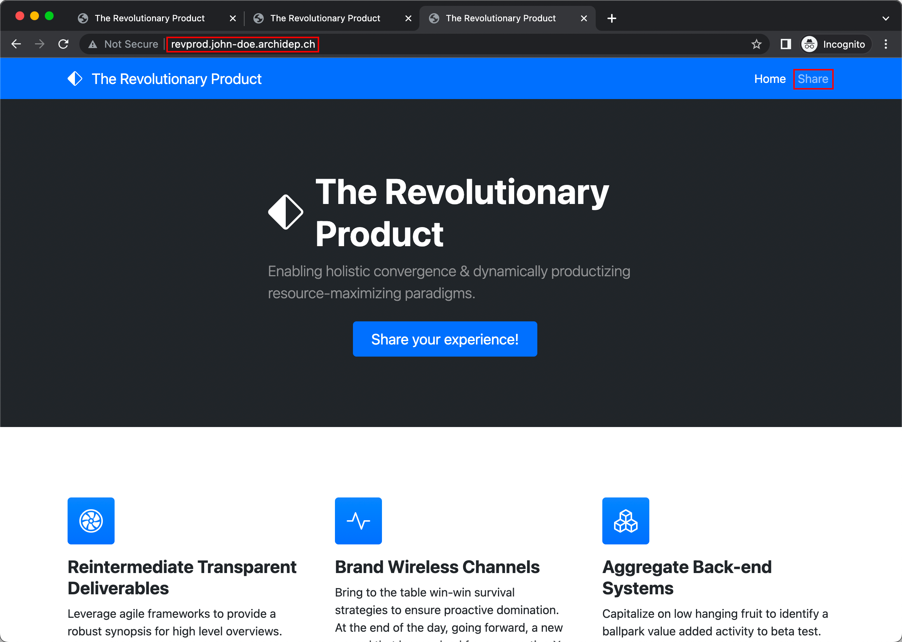
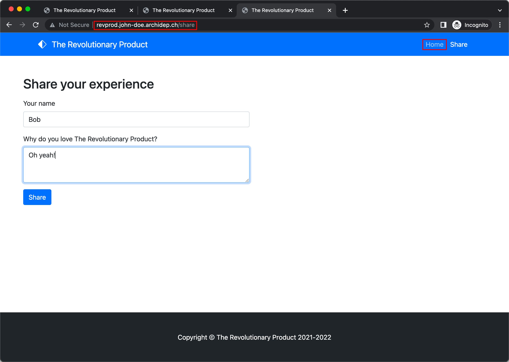
Neither the browser nor the user now have any idea that this application is in fact composed of multiple components. To the outside world, it appears as one application on one domain, thus also solving our original problem: there is no longer any cross-origin request, so the same-origin policy does not apply.
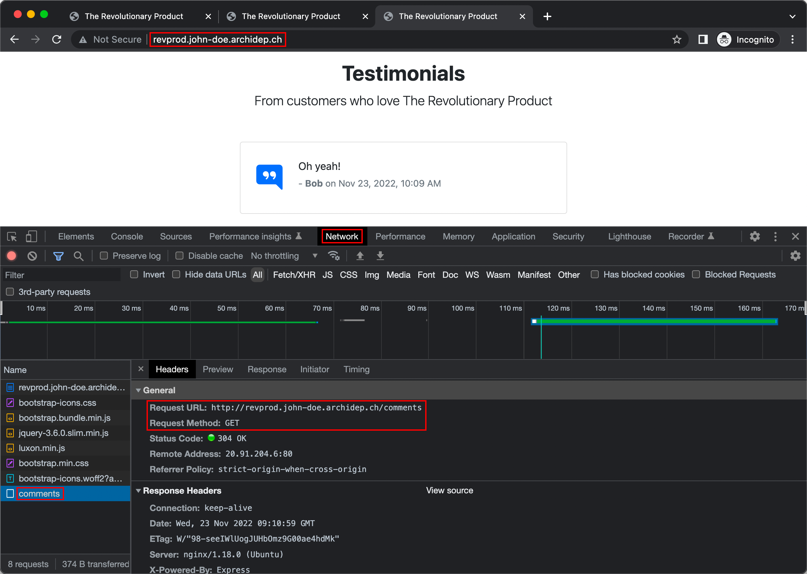
What have I done?
You have deployed a multi-component website in a way that makes it appear as a single website to the end user. You have achieved this by running each component separately, and then configuring your reverse proxy (nginx) to appropriately proxy requests to each component.
Architecture
This is a simplified architecture of the main running processes and communication flow at the end of this exercise:
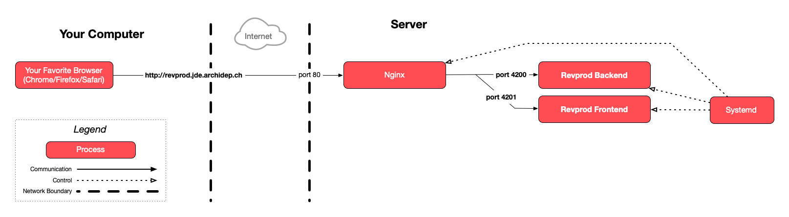
{kind=link}
Note
Note that this diagram only shows the processes involved in this exercise, ignoring the other applications (such as the PHP Todolist) we have also deployed on the server.
Troubleshooting
Here’s a few tips about some problems you may encounter during this exercise.
nginx: [emerg] could not build server_names_hash
If you encounter the following error:
$> sudo nginx -t
nginx: [emerg] could not build server_names_hash, you should increase server_names_hash_bucket_size: 64
nginx: configuration file /etc/nginx/nginx.conf test failed
It may be because your domain name (the value of your server_name directive)
is too long for nginx’s default settings. In that case, edit the main nginx
configuration with sudo nano /etc/nginx/nginx.conf and add the following line
in the http section:
server_names_hash_bucket_size 256;